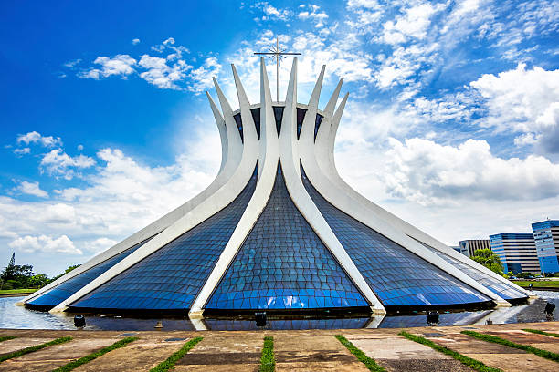
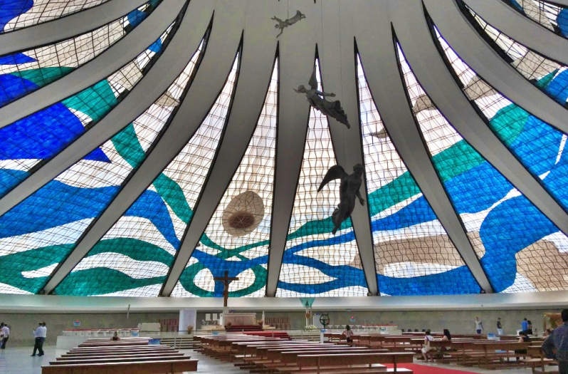
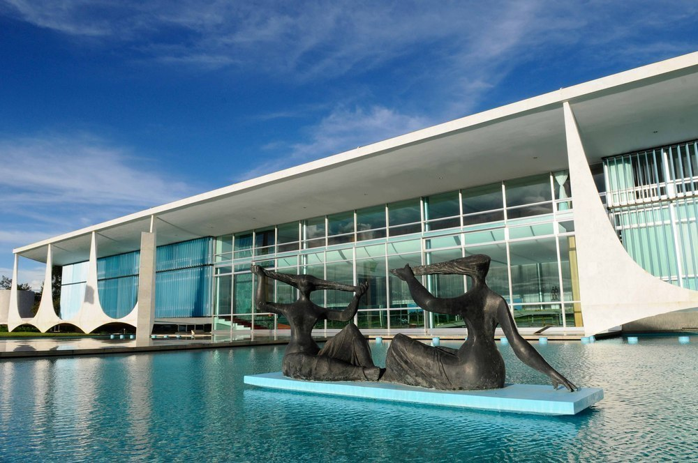
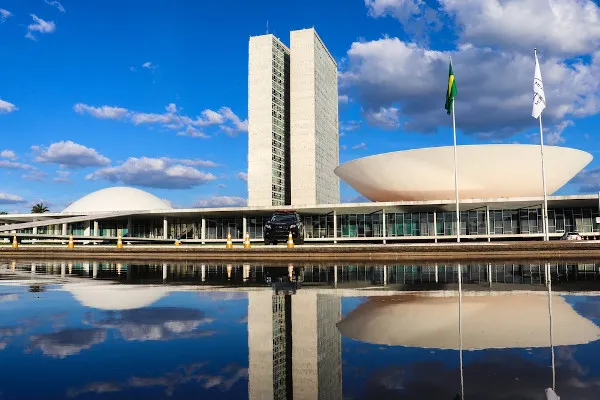
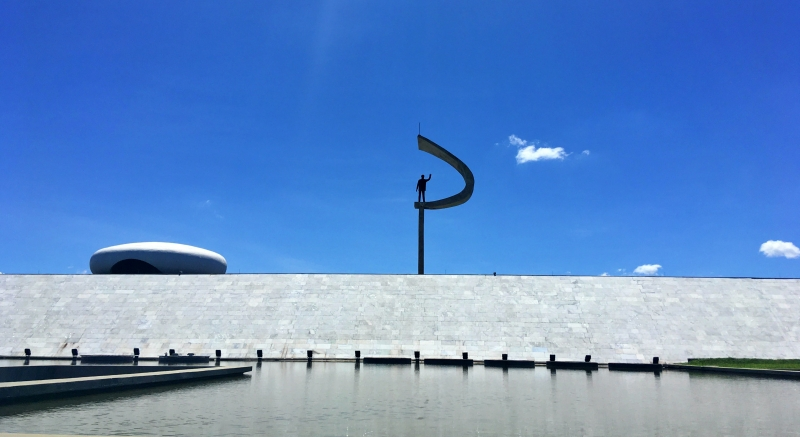
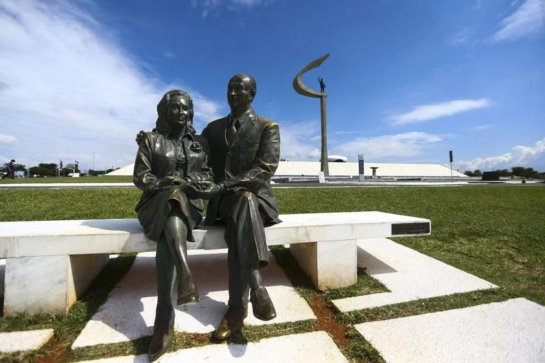
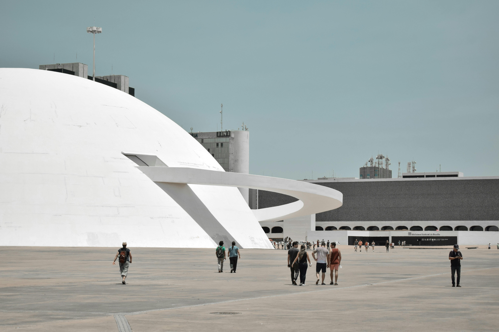

História da fundação
A construção de Brasília foi a concretização de um projeto nacional que existia desde o século XIX, cujo o intuito era o de levar a capital do nosso país para o planalto central.
O fato é que JK buscava um lugar afastado do Rio De Janeiro e no meio do deserto por motivos geopolíticos:
- Em caso de guerra, a capital não estaria tão vulnerável
- A pressão popular sobre o governo seria menor
- A nova capital iria contribuir para a ocupação do interior brasileiro
Apesar das críticas, de políticos como Carlos lacerda, a oposição aprovou o plano e deu carta branca para JK fazê-lo. O projeto da nova cidade foi escolhido através de concurso público.
O plano vencedor foi do arquiteto carioca Lúcio Costa, enquanto Oscar Niemeyer seria o responsável pelo projeto dos edifícios.


Arquitetura ou urbanismo?
Avião ou borboleta?
Mesmo tendo ficado popularmente acordado entre a maioria de que o desenho é de um avião, para alguns brasilienses o formato do Plano Piloto, ainda ganha interpretações diferentes. Um dos principais motivos é que o cartógrafo, Adalberto Lassance, que participou do desenvolvimento dos projetos de construção da cidade em 1958 afirmou na época que o formato da Capital foi projetado para lembrar uma borboleta.
Segundo ele, Lúcio Costa se irritava quando alguém dizia que o Plano Piloto tinha formato de avião e que a comparação acontecia porque os eixos Sul e Norte são muito acentuados.
Além de Lassance, surgiram outras personalidades confirmando a intenção de Lúcio Costa. Em uma entrevista para a Rádio Nacional AM Jarbas Marques, diretor do Patrimônio Histórico e Cultural, afirmou que Lúcio Costa defendia que o projeto de Brasília era mesmo uma Borboleta reafirmando a fala de Lassance de que “as duas asas são bem mais largas que uma asa de avião”.

Principais monumentos
Brasília é a cidade dos monumentos impressionantes e arquitetura deslumbrante. Ao percorrer suas avenidas largas e simétricas, é impossível não se encantar com os monumentos icônicos que pontuam a paisagem urbana. Cada estrutura de Brasília reflete a grandiosidade e a visão futurista de seus arquitetos, e juntas elas contam a história e a identidade desta cidade única.
Conheça alguns dos principais monumentos
Praça dos três poderes

A Praça dos Três Poderes é um logradouro público em Brasília, um amplo espaço aberto que contém os três edifícios monumentais que representam os três poderes da República brasileira, além de outras edificações e monumentos atualmente: o Palácio do Planalto, sede do Executivo federal brasileiro; o Palácio do Supremo Tribunal Federal, sede da corte máxima do Judiciário; e o Palácio do Congresso Nacional do Brasil, sede do Legislativo federal.
Além disso a Praça dos três poderes é um espaço aberto que mede aproximadamente 120x200m, de modo que os prédios representativos dos poderes não se sobressaíssem um diante dos outros, em atenção ao princípio de que os poderes são harmônicos e independentes e, portanto, têm o mesmo peso. Não é uma praça tradicional, pois não possui árvores nem qualquer outro elemento que proporcione sombra às pessoas que nela permanecem. De vegetação, somente as palmeiras imperiais que circundam a grande superfície de água à altura do Congresso Nacional e o Bosque dos Constituintes, composto por arvores plantadas pelos deputados constituintes de 1988.
Catedral Metropolitana de Brasília
 A Catedral Metropolitana - Nossa Senhora Aparecida ou simplesmente Catedral de Brasília, é um templo católico brasileiro, na qual se encontra a cátedra da Arquidiocese de Brasília. Sua arquitetura foi concebida por Oscar Niemeyer e é por vezes considerada sua obra-prima, tendo sido graças a ela que o arquiteto venceu o Prêmio Pritzker, considerado equivalente ao Nobel de sua profissão, em 1988. Sua arquitetura foi concebida por Oscar Niemeyer e é por vezes considerada sua obra-prima, tendo sido graças a ela que o arquiteto venceu o Prêmio Pritzker, considerado equivalente ao Nobel de sua profissão, em 1988.
O local da Catedral foi previsto por Lúcio Costa em seu Projeto para o Plano Piloto. Segundo Lúcio, ela deveria ficar em uma praça autônoma por questões protocolares simbolizando fisicamente a laicidade do estado e a separação entre governo e religião, por isso fora da Praça dos Três Poderes e também por questão de escala, a fim de valorizar o monumento e ordem arquitetônica, manter limpa a perspectiva até o Marco Zero, no cruzamento dos eixos, por isso fora do canteiro central do Eixo Monumental.Palácio da Alvorada
O Palácio da Alvorada é um edifício localizado na cidade de Brasília, a capital do Brasil. O palácio é a residência oficial do Presidente do Brasil, situa-se às margens do Lago Paranoá, tendo sido o primeiro edifício inaugurado na Capital Federal, em 30 de junho de 1958. Embora o presidente da República tenha no Palácio da Alvorada suas dependências para estudos e leituras, além de lá pernoitar, o Gabinete Presidencial está situado no Palácio do Planalto, onde o mandatário da nação realmente recebe autoridades, despacha e cumpre seus deveres de Chefe de Estado e de Governo.
O Alvorada é uma construção revestida de mármore e vedada por cortinas de vidro, cuja estrutura é constituída externamente de seus pilares brancos. Desta forma, o vidro proporciona uma certa integração entre os espaços interior e exterior. Já as famosas colunas apoiam-se no terreno por um de seus vértices fazendo, aparentemente, desaparecer a ideia de peso como que pousando o edifício no solo de Brasília. O cálculo estrutural do engenheiro Joaquim Cardozo permitiu que as bases do Alvorada assim como em outros palácios e na catedral de Brasília ficassem delgadas, ou seja, as colunas apenas tocam o chão, dando a impressão de que o edifício flutua no ar. A obra de Niemeyer foi apelidada eventualmente de barroca devido ao trabalho com a curva neste e em outros prédios da capital federal.Congresso Nacional
O Congresso Nacional foi criado pela constituição de 1824 com a denominação de Assembleia Geral Legislativa do Império do Brasil e instalada em 6 de maio de 1826, de composição bicameral, com formação por uma Câmara dos Deputados Gerais e pela Câmara dos Senadores. A partir de 1889, com a república, sua denominação muda para Congresso Nacional da República dos Estados Unidos do Brasil, mantendo a tradição bicameral sedimentada pela Constituição brasileira de 1891, com mandato de 9 anos para senadores e de 4 para deputados, que passaram a receber a denominação de deputados federais.
O Congresso é o órgão constitucional que exerce, no âmbito federal, as funções do poder legislativo, quais sejam, elaborar ou aprovar leis e fiscalizar o Estado brasileiro. O Congresso é bicameral, logo composto por duas Casas: o Senado Federal (integrado por 81 senadores, que representam as 27 unidades federativas, isto é, os 26 estados e o Distrito Federal) e a Câmara dos Deputados (integrada por 513 deputados federais, que representam o povo).Memorial JK
 O Memorial JK é um museu, mausoléu e centro cultural brasileiro construído para homenagear o 21º presidente do Brasil, Juscelino Kubitschek de Oliveira. Ele está localizado no canteiro central do Eixo Monumental, em Brasília, na Zona Cívico-Administrativa, na Praça do Cruzeiro, a região mais alta do Plano Piloto. O projeto do Memorial foi do arquiteto Oscar Niemeyer, responsável pelos principais prédios da capital brasileira, a pedido da viúva de Juscelino e ex-primeira-dama Sarah Kubitschek. A neta de Juscelino e Sarah, Anna Christina Kubitschek Barbará Pereira, é a atual diretora da Sociedade Civil Memorial Juscelino Kubitschek, que gere o Memorial JK.
Em seu interior os visitantes podem ver fotos e objetos da vida de Juscelino e Sarah, como a faixa presidencial e as roupas usadas por eles na posse, além do túmulo do ex-presidente. Obras de artistas como Athos Bulcão e Marianne Peretti complementam o ambiente interno do memorial. No exterior do memorial fica aquela que possivelmente é a mais famosa estátua de Juscelino, feita por Honório Peçanha, que se ergue em um pedestal a quase trinta metros do solo. A ideia do formato e do pedestal foi concebida por Niemeyer, que teria sido inspirada no símbolo do comunismo o que sempre foi negado por ele, mas gerou certa polêmica antes de sua instalação. O prédio, visto de fora, é um bloco de mármore branco com poucas aberturas. O local fica aberto de terça a domingo, entre 9 e 18 horas.Museu Nacional de Brasília
O Museu Nacional da República é um museu brasileiro criado e administrado pelo governo do Distrito Federal, Brasil. O museu e a Biblioteca Nacional de Brasília formam o Complexo Cultural da República João Herculino. Apesar da existência de um museu e um conjunto cultural terem sido planejados desde a época da fundação de Brasília, a construção do Museu Nacional iniciou-se apenas em 1999. A inauguração ocorreu apenas sete anos depois, em 15 de dezembro de 2006 dia do aniversário de 99 anos de Oscar Niemeyer, autor do projeto arquitetônico do edifício. Para celebrar a abertura, organizou-se uma exposição sobre a obra deste famoso arquiteto. A Biblioteca Nacional Leonel de Moura Brizola, vizinha do Museu, também foi inaugurada no mesmo dia.
O nome do Museu foi dado em memória de Honestino Guimarães, um aluno do curso de Geologia da Universidade de Brasília (UnB) que se tornou um importante líder do movimento estudantil no período da ditadura. Após ser preso algumas vezes, se tornou um desaparecido político em 10 de outubro de 1973.
Curiosidades
-
Única cidade moderna a receber reconhecimento como patrimônio mundial pela UNESCO
A UNESCO (Organização das Nações Unidas para a Educação, a Ciência e a Cultura) reconheceu Brasília como um exemplo notável de planejamento urbano e arquitetura moderna, que representam uma ruptura radical com as formas urbanas tradicionais. Ademais, a cidade foi reconhecida por sua significância como um laboratório social e cultural, onde diferentes culturas regionais do Brasil se encontram e se misturam, tornando-se um exemplo de diversidade cultural.
-
Polo artístico
Espalhada por toda Brasilia, a cultura é vista predominantemente nas suas exclusivas obras arquitetônicas, como a Catedral Metropolitana de Nossa Senhora Aparecida. Além disso, há também as opções tradicionais de museus, como os Museu Vivo da Memória Candanga, Museu de Arte de Brasilia e o Museu Histórico de Brasília.
-
Parque Nacional
O Parque Nacional de Brasília é uma das principais áreas de preservação ambiental da cidade, com uma rica biodiversidade, trilhas para caminhadas e cachoeiras, sendo maior que o Central Park, de Nova Iorque.
-
Lago Paranoá
O Lago Paranoá é um dos principais atrativos naturais de Brasília. Ele é uma imensa reserva artificial de água doce localizada no coração da cidade, formada pelo represamento do Rio Paranoá, que corta a região administrativa de Brasília e contribui para o abastecimento de água da cidade.
Nele, é possível a realização de esportes e passeios. -
Céu de Brasília
O “Céu de Brasília” é uma expressão usada para se referir ao céu limpo e azul. É, portanto, uma característica marcante do clima da região de Brasília. Por estar localizada em uma região de cerrado, é conhecida por ter um clima com estação seca e úmida bem definidas, o que resulta em um céu geralmente ensolarado e de cor azul intensa na maior parte do ano.
A propósito, isso faz com que a cidade seja um local propício para a observação de estrelas, planetas e outros fenômenos astronômicos.
Eventos neste ano
Em 2025 a programação comeca em 19 de abril, com duas exposições concomitantes no Museu Nacional da República; uma em homenagem a Juscelino Kubitschek, com o acervo pessoal e fotos cedidas pela família; e outra com imagens exclusivas do artista plástico Pedro Garcia. A Sala Martins Pena recebe, também nesta data, atrações teatrais. No dia 20, está previsto um espetáculo de mágica e, no dia 21, a entrega da medalha do Mérito Distrital da Cultura Seu Teodoro e o concerto Rock Sinfônico da Orquestra Sinfônica do Teatro Nacional Claudio Santoro.
Do dia 19 a 21, o Cine Brasília terá a mostra Brasília em Cena, com obras temáticas da capital do país ou com produtores locais (confira Programação).
Estão confirmados os shows da dupla Zé Neto & Cristiano, no dia 21, e a cantora de piseiro Mari Fernandez foi anunciada no dia 20. As demais atrações serão divulgadas após a confirmação da Organização da Sociedade Civil (OSC) que ficará responsável pela gestão do evento e cujo edital está em fase de conclusão. Segundo Cristiano Araújo, secretário de Turismo, foram reservados artistas do frevo, do axé, da música sertaneja e do sertanejo universitário para se apresentarem.
Na Esplanada dos Ministérios, os efetivos da Polícia Militar (PMDF) e do Corpo de Bombeiros estarão reforçados. Também haverá revista. "Cerca de 500 mil pessoas devem participar do evento nos três últimos dias de festa. Estamos trabalhando com antecipação nas diversas áreas de governo, isso nos ajuda a programar e facilita o planejamento de segurança que está sendo feito", afirmou o secretário de Segurança Pública, Sandro Avelar.